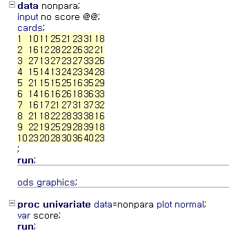
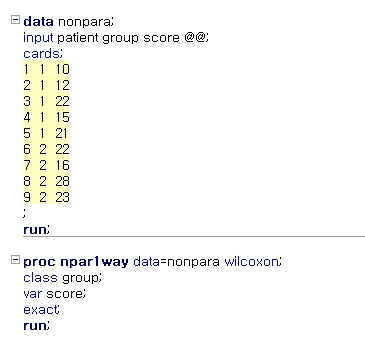
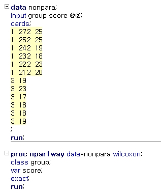

Chapter 3 비모수 검정
모수적 추론(parametric inference):
모집단의 분포가 정규분포를 따를 경우: 표본 추출 \(\rightarrow\) 추정량, 검정통계량의 분포 파악 \(\rightarrow\) 모수의 추론
모집단의 분포가 임의의 분포를 따를 경우: 대표본 추출 \(\rightarrow\) 중심극한정리 \(\rightarrow\) 추정량, 검정통계량의 분포 파악 \(\rightarrow\) 모수의 추론
모집단의 분포가 정규분포가 아니고 표본의 크기가 충분히 크지 않을 경우 추론의 효율성이 낮아질 가능성이 있음
모수적 방법
일표본, 대응표본 : one sample t-test
독립인 2집단 : two sample t-test
독립인 3집단 이상 : ANOVA
비모수적 추론(nonparametric inference):
모집단에 대하여 분포함수의 모수형을 가정하지 않고 추론하는 방법을 비모수적 방법(nonparametric method)이라고 함
비모수적 방법에서는 ’모집단의 분포함수가 연속이다’라는 연속성 가정이나 ’모집단의 분포함수가 연속이고 대칭이다’라는 대칭성 가정을 많이 사용함
비모수적 방법은 관측값이 어떤 분포를 따르는지에 관계없이 항상 적용할 수 있는 분포무관(distribution-free) 방법
추론을 위해 주로 관측값의 부호(sign)와 순위(rank)를 이용
비모수적 방법
일표본, 대응표본 : Wilcoxon signed rank test
독립인 2집단 : Wilcoxon rank sum test, Mann-whitney test
독립인 3집단 이상 : Kruskall-Wallis test
3.1 정규성 검정
많은 통계적인 방법들이 자료가 정규분포임을 가정하기 때문에 자료의 정규성을 확인하는 것이 중요함
탐색적 자료분석을 통해 자료의 분포 형태를 파악하고, 평균과 중앙값이 차이가 많이 나는지, 왜도와 첨도값이 \(-2\sim 2\)사이에 위치하는지 등을 확인
일반적으로 표본크기가 \(30\)을 넘는 경우 중심극한정리에 의해 모집단의 분포에 상관없이 표본평균이 정규성을 갖는다고 가정할 수 있음
하지만 표본크기가 \(10\sim 30\)인 경우에는 정규성 검정을 통해 정규분포 인지 아닌지를 파악해야 함
표본크기가 \(10\) 미만인 경우에는 비모수적인 통계방법을 사용
정규성 검정을 위해 흔히 사용되는 검정 방법은 Kolmogorov-Smirnov test와 Shapiro-Wilk test를 들 수 있음
가설
\(H_0\): 자료는 정규분포를 따른다.
\(H_1\): 자료는 정규분포를 따르지 않는다.
검정: \(P\)-value가 유의수준 \(\alpha\)보다 작다면 귀무가설을 기각하여 정규성이 만족되지 않는 것이고, \(P\)-value가 유의수준 \(\alpha\)보다 크면 귀무가설이 채택되어 정규분포를 따른다고 간주
정규성 검정을 위해 test 이외에도 그림을 통해 살펴보기도 함
2.1 Normal Probability Plot


- Normal Probability Plot - Normal dist.

- Normal Probability Plot - Mixed Normal dist.

- Normal Probability Plot - Outlier

- Normal Probability Plot - Uniform dist.

새로운 항우울제의 치료 효과를 증명하기 위해 40명의 우울증 환자에게 항우울제를 투여하였다. 1개월의 치료 뒤 측정한 우울증 점수를 통해 항우울제의 효과를 알아보고자 한다. 분석에 앞서 항우울제가 정규분포를 따르는지 검정하라.

SAS Code



3.2 윌콕슨 부호순위 검정
윌콕슨 부호순위 검정(Wilcoxon signed-rank test)
자료의 형태: \(X_1, X_2, \ldots, X_n\)은 연속이고 대칭인 분포 \(F(x-\theta)\)에서 추출한 확률표본
검정 절차 귀무가설 \(H_0 : \theta=\theta_0\)
\(Z_i = X_i - \theta_0, \quad i=1, 2, \ldots, n\) 자료로부터 귀무가설하의 \(\theta_0\)값을 뺀다
절대값 \(|Z_i|\)를 취하고 이에 해당하는 순위를 \(R_i\)라 하자.
윌콕슨 부호순위 통계량 \(V=\sum_{i=1}^n \psi_iR_i\), 여기서 \(Z_i >0\)이면 \(\psi_i=1\), 아니면 \(\psi_i=0\)이다.
유의수준 \(\alpha\)에서 \[\begin{cases} H_1: \theta>\theta_0\text{일 때} \hskip3pt V \ge v(\alpha, n) \text{이면} \hskip3pt H_0 \hskip3pt \text{기각} \\ H_1: \theta<\theta_0\text{일 때} \hskip3pt V < v(\alpha, n) \text{이면} \hskip3pt H_0 \hskip3pt \text{기각} \\ H_1: \theta \ne \theta_0\text{일 때} \hskip3pt V \ge v(\alpha/2, n)\hskip3pt \text{또는}\hskip3pt V < v(1-\alpha/2, n) \text{이면} \hskip3pt H_0 \hskip3pt \text{기각} \end{cases}\]
여기서 \(v(\alpha,n)\)는 \(H_0\)하에서 부호순위 통계량 \(V\)의 분포의 상위 \(100\alpha\%\) 백분위수를 나타냄
검정통계량의 의미
윌콕슨 부호순위 검정법은 자료의 절대값에 대해서 제일 작은 값에서부터 제일 큰 값까지 순위를 매긴 후에 양수값을 갖는 자료의 순위 합을 통계량으로 함
원자료를 사용하지 않고 순위를 사용함으로써 비정규분포의 특성을 제거할 수가 있음
표본의 개수가 \(n\)일 때, 통계량 \(V\)는 \(H_0\) 하에서 최소 \(0\)부터 최대 \(n(n+1)/2\)의 값을 가질 수 있는데, 이 값은 각각 모든 자료가 \(\theta_0\)보다 작은 경우와, 모든 자료가 \(\theta_0\)보다 큰 경우일 때의 값
표본크기 \(n\)만 주어지면 \(V\)의 확률분포를 알 수 있음
검정통계량의 대표본근사
표본크기 \(n\)이 충분히 큰 경우에는 순위합의 분포가 대표본근사이론(large sample asymptotic theory)에 의해 정규분포로 근사
\(V\)의 평균은 귀무가설하에서 \(E(V)=n(n+1)/4\), 분산은 \(Var(V)=n(n+1)(2n+1)/24\)임. 따라서, \[Z_V=\frac{V-E(V)}{\sqrt{Var(V)}} \sim N(0,1)\]

다음은 새로운 항우울제의 치료 효과를 증명하기 위한 예비 연구이다. 총 8명의 우울증 환자를 대상으로 항우울제 치료 전/후(Pre/Post)의 우울증 점수를 측정하였다. 치료 전과 비교하여 새 항우울제 치료 후 우울증 점수가 유의하게 감소하였는지 검정하라.

SAS Code


3.3 윌콕슨 순위합 검정
윌콕슨 순위합 검정(Wilcoxon rank sum test)
자료의 형태: \(X_1, X_2, \ldots, X_m\)은 연속분포 \(F(x)\)에서 추출한 확률표본
\(Y_1, Y_2, \ldots, Y_n\)은 연속분포 \(F(x-\Delta)\)에서 추출한 확률표본
검정 절차 귀무가설 \(H_0 : \Delta=\theta_0\)
\(X\)와 \(Y\)의 혼합표본에서 \(Y_j\)의 순위를 \(R_j\)라 하자.
윌콕슨 순위합 통계량 \(V=\sum_{i=1}^n R_j\)
유의수준 \(\alpha\)에서 \[\begin{cases} H_1: \Delta>\theta_0\text{일 때} \hskip3pt V \ge v(\alpha, m,n) \text{이면} \hskip3pt H_0 \hskip3pt \text{기각} \\ H_1: \Delta<\theta_0\text{일 때} \hskip3pt V < v(\alpha,m, n) \text{이면} \hskip3pt H_0 \hskip3pt \text{기각} \\ H_1: \Delta \ne \theta_0\text{일 때} \hskip3pt V \ge v(\alpha/2,m, n)\hskip3pt \text{또는}\hskip3pt V < v(1-\alpha/2,m, n) \text{이면} \hskip3pt H_0 \hskip3pt \text{기각} \end{cases}\]
여기서 \(v(\alpha,m,n)\)는 \(H_0\)하에서 부호순위 통계량 \(V\)의 분포의 상위 \(100\alpha\%\) 백분위수를 나타냄
검정통계량의 의미
윌콕슨 순위합 검정법은 두 그룹의 자료 \(X, Y\)를 섞은 혼합표본에서 순위를 매기고, 한 그룹 \(Y\)의 순위합 만을 구함
이 값이 크면 그룹 \(Y\)의 자료는 자연스럽게 그룹 \(X\)의 자료보다 대체적으로 큰 값을 가진다고 볼 수 있음
\(t\)-test와 같이 대조군과 처리군의 평균의 차이가 있는지를 검정하는 것과 같은 개념으로 생각할 수 있음
맨-휘트니 검정(Mann-Whitney test)의 검정통계량 \(U=mn+m(m+1)/2-V\)로써 윌콕슨 순위합 검정과 동치의 관계를 가짐
검정통계량의 대표본근사
표본크기 \(m, n\)이 충분히 큰 경우에 통계량 \(V\)는 정규근사 가능
\(V\)의 평균은 귀무가설하에서 \(E(V)=n(m+n+1)/4\), 분산은 \(Var(V)=mn(m+n+1)/12\)임. 따라서, \[Z_V=\frac{V-E(V)}{\sqrt{Var(V)}} \sim N(0,1)\]

다음은 새로운 항우울제의 치료 효과를 비교하기 위한 예비 연구이다. 실험군 5명, 대조군 4명에게 각각 새 항우울제와 위약을 투여한 뒤 1개월 뒤 우울증 점수를 측정하여 두 군의 치료 효과를 비교하고자 한다. 새 항우울제가 위약에 비해 효과가 있는지 검정하라.

SAS Code



3.4 크루스칼-왈리스 검정
- 크루스칼-왈리스 검정(Kruskall-Wallis test)
귀무가설과 대립가설
\(H_0 : k\)개의 모집단의 평균이 같다.
\(H_1 :\) 적어도 하나의 집단은 평균이 같지 않다.
자료의 구조

\(k\)개의 모집단에서 얻은 \(n=\sum_i n_i\)개의 자료에 대한 혼합표본을 만든 다음 오름차순으로 순위를 부여
혼합표본의 순위

\(R_{ij}\)는 \(X_{ij}\)에 대응하는 순위
혼합표본의 총 평균순위 \[\bar{R}=\frac{1+2+\cdots +n}{n}=\frac{n+1}{2}, \quad n=\sum_{i=1}^k n_i\]
\(H_0\)가 참일 때 각 집단의 평균순위 \(\bar{R}_i\)는 \(\bar{R}\)과 큰 차이가 없을 것으로 기대
검정통계량 \[H=\frac{12}{n(n+1)}\sum_{i=1}^nn_i(\bar{R}_i -\bar{R})^2 \sim \chi^2(k-1)\]
기각역 \[H \ge \chi^2 (k-1; \alpha)\]

다음은 서로 다른 항우울제의 치료 효과를 비교하기 위한 연구이다. A군, B군, C군에 우울증 환자를 \(6\)명씩 무작위로 배정하고 각각 A약, B약, C약을 2개월씩 투여한 뒤 우울증 점수를 측정하였다. 이 세가지 약의 치료 효과에 차이가 있는지 통계적으로 검정하라.

SAS Code
